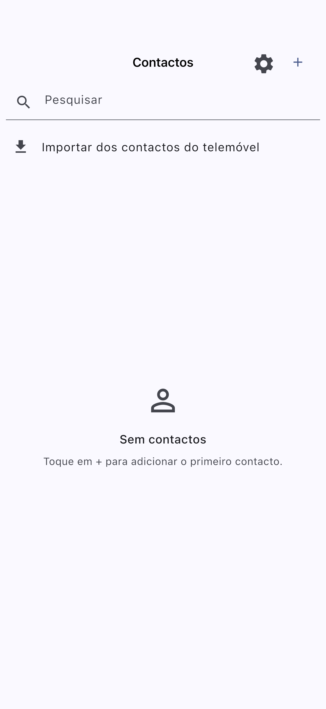
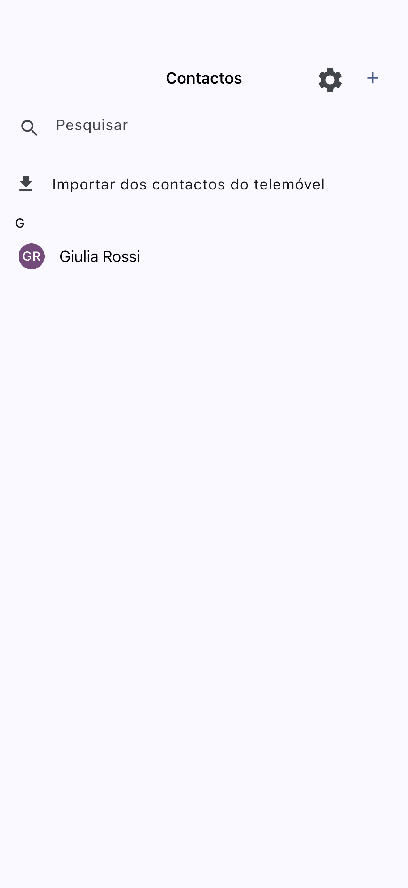

PhoneGhost é uma segunda agenda, separada da do telefone, que pode ainda albergar uma ou mais agendas privadas cifradas, cada uma protegida por um código que você escolhe.
As agendas privadas não são uma funcionalidade oculta: a app declara-as abertamente, no primeiro arranque e nas lojas. O que está oculto é quantas existem e se existe alguma — e isto não é um detalhe de apresentação, mas o princípio em que todo o resto é construído. Não há lista, não há contador, não há ícone que se acende. Nem sequer para si.
Acontece uma única vez por instalação e não pode ser ignorado.
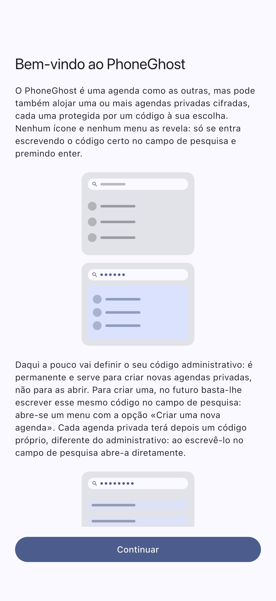
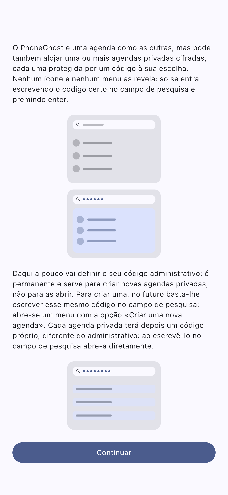
É o único ponto da app em que o mecanismo é explicado na íntegra. As ilustrações dizem sem palavras o que as palavras explicam mal: o código de uma agenda privada digitado na pesquisa abre essa agenda; o código administrativo abre um menu, não uma agenda.
A explicação fica acessível a qualquer momento a partir do menu administrativo (§6.1): não é um ecrã que se vê uma vez e se perde.
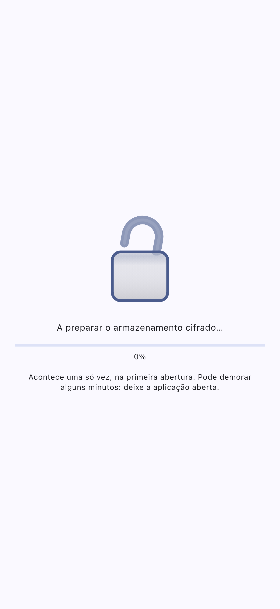
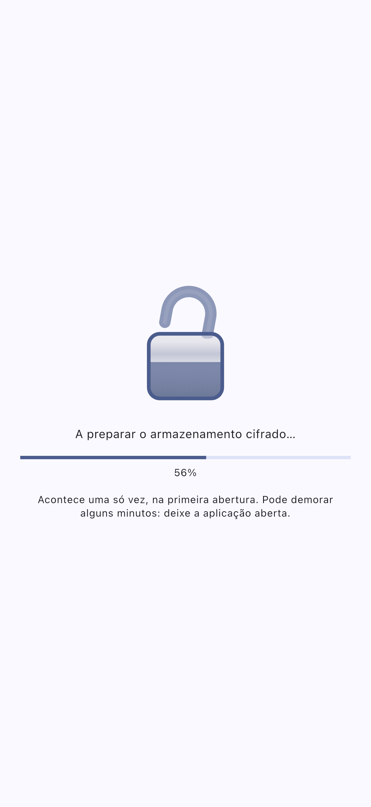
A app escreve aqui o espaço que albergará as agendas privadas — sempre o mesmo, quer crie uma, dez ou nenhuma. É por isso que a espera não revela nada sobre si: a barra de progresso avança de forma idêntica em cada instalação.
São dezenas de segundos num telefone de 2019. O cadeado enche-se juntamente com a barra, e um reflexo atravessa-o lentamente: serve para distinguir «estou a trabalhar» de «fiquei bloqueado», que é a única dúvida que este ecrã existe para resolver.
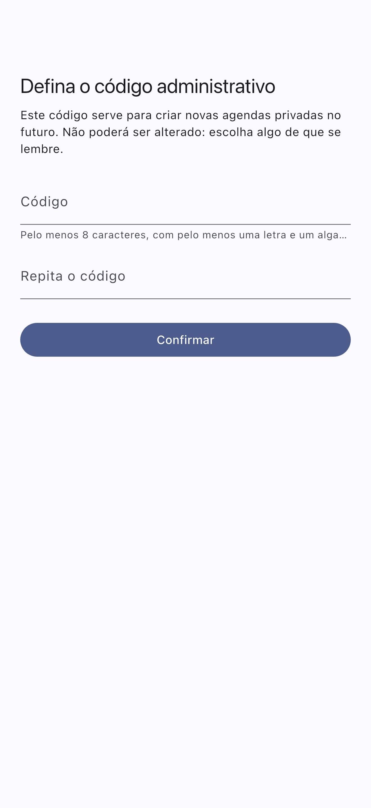
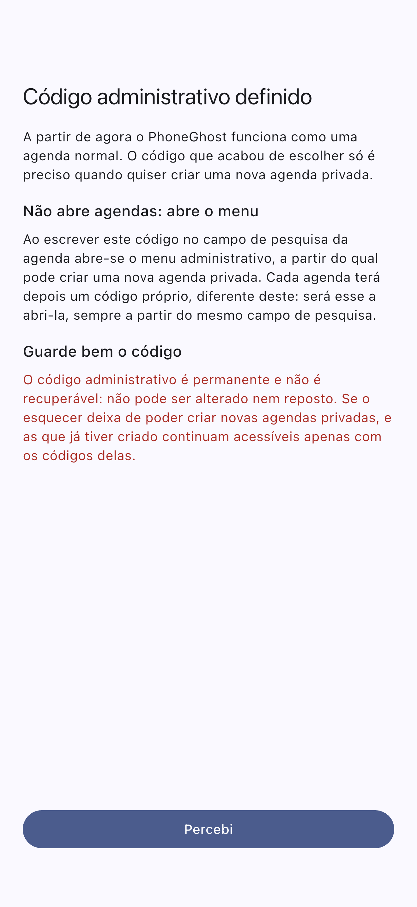
Pelo menos 8 caracteres, com pelo menos uma letra e um algarismo.
O ecrã de confirmação existe para dizer uma única coisa — a que se entende mais frequentemente mal: o código administrativo abre um menu, não uma agenda.


Uma agenda comum: lista ordenada alfabeticamente com letras de secção, avatar com iniciais (a cor deriva do nome, não é aleatória nem escolhida manualmente), pesquisa, ficha, edição, eliminação.
A pesquisa ignora acentos e maiúsculas. Pesquisando joao encontra João, e vice-versa: internamente os nomes são comparados numa forma «normalizada». Aplica-se ao nome próprio, apelido e empresa.
A eliminação pede confirmação através de um diálogo e não é reversível: dentro de uma agenda privada não existe uma cópia do sistema a partir da qual recuperar.
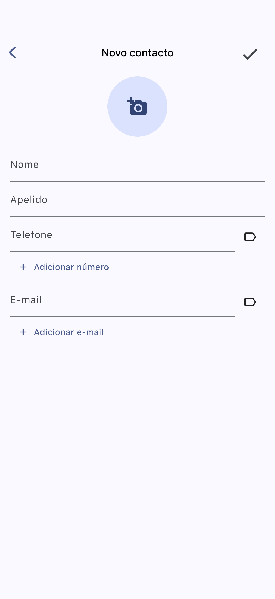
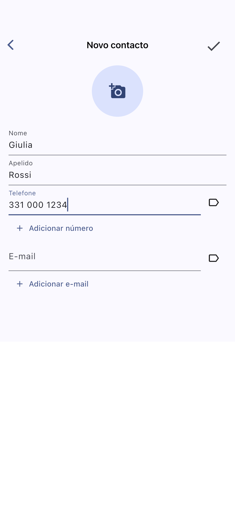
Nome próprio, apelido, empresa, função, vários números de telefone e vários endereços de e-mail, cada um com a sua própria etiqueta (telemóvel, casa, trabalho, ou uma etiqueta personalizada). «Adicionar número» e «Adicionar e-mail» criam uma linha adicional.
A fotografia toca-se no topo: tirada com a câmara ou escolhida da galeria. É redimensionada e guardada cifrada num ficheiro independente; se a permissão for negada, a app informa em vez de falhar silenciosamente.
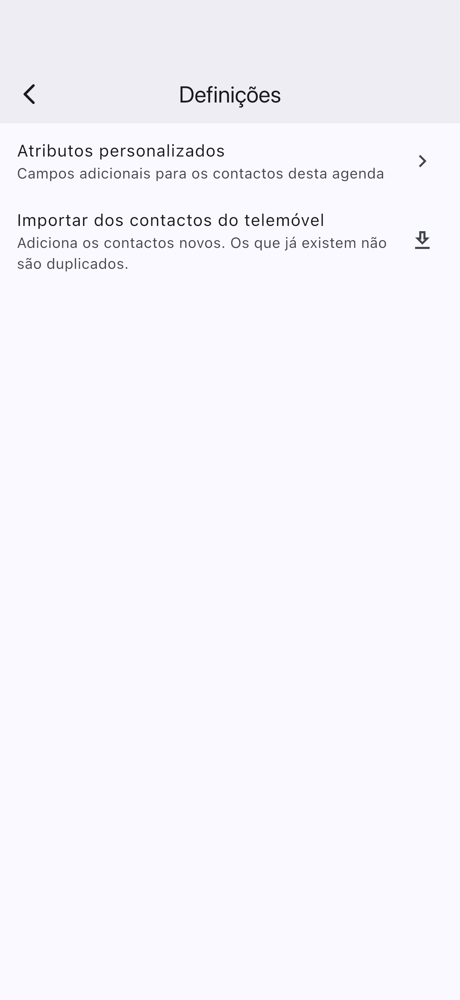
A importação existe em dois locais, respondendo a duas necessidades distintas:
Pode ser repetida quantas vezes quiser. Os contactos já presentes são reconhecidos e ignorados, pelo que a agenda não duplica. O reconhecimento funciona assim:
O número tem prioridade sobre o nome intencionalmente: duas pessoas diferentes podem ter o mesmo nome, e a regra inversa faria desaparecer uma delas silenciosamente.
Ignora, não atualiza. Um contacto já presente não é substituído pelos dados do telefone: as alterações feitas dentro do PhoneGhost — etiquetas, atributos personalizados, aliases — continuam a ser suas. A consequência aceite é que, se alterar o número de alguém no telefone, uma nova importação adiciona-o como novo contacto em vez de atualizar o existente.
No fim de uma importação, a app informa sempre o que aconteceu, mesmo quando não havia nada a fazer («Sem novos contactos para importar»), porque uma importação que não encontra nada e uma que nunca começou seriam de outro modo o mesmo ecrã imóvel.
A importação existe apenas na agenda pública. As agendas privadas nunca importam da agenda do sistema.
Campos adicionais, definidos por si, diferentes para cada agenda: os da agenda pública não existem dentro de uma privada e vice-versa.
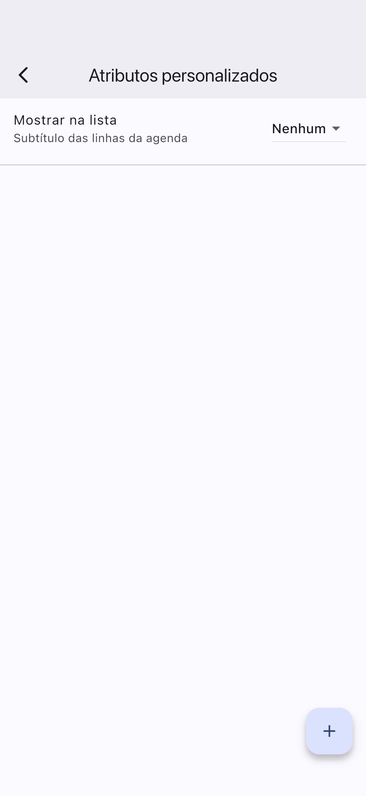
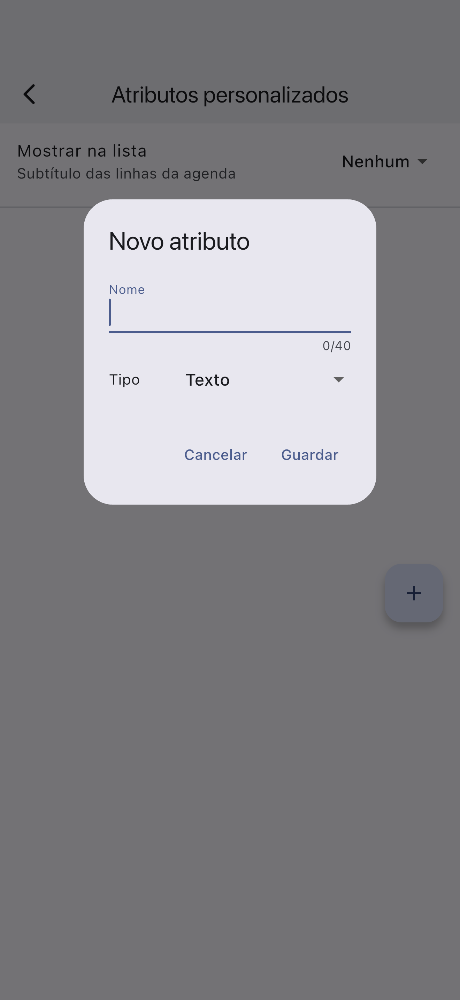
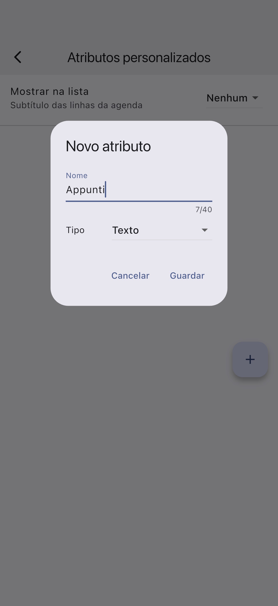
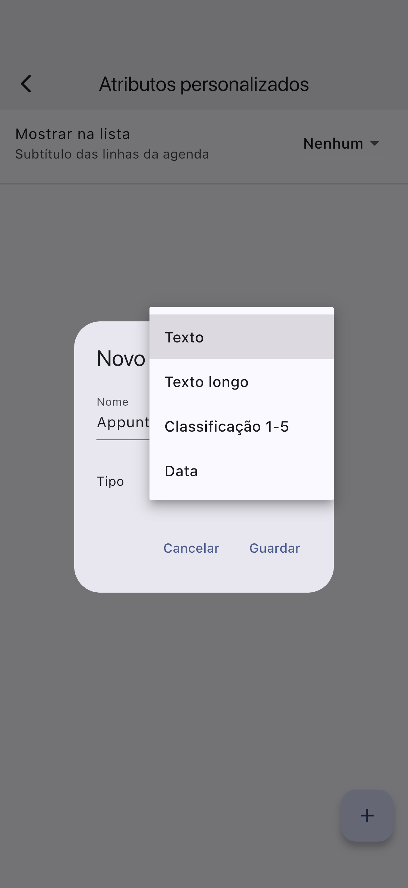
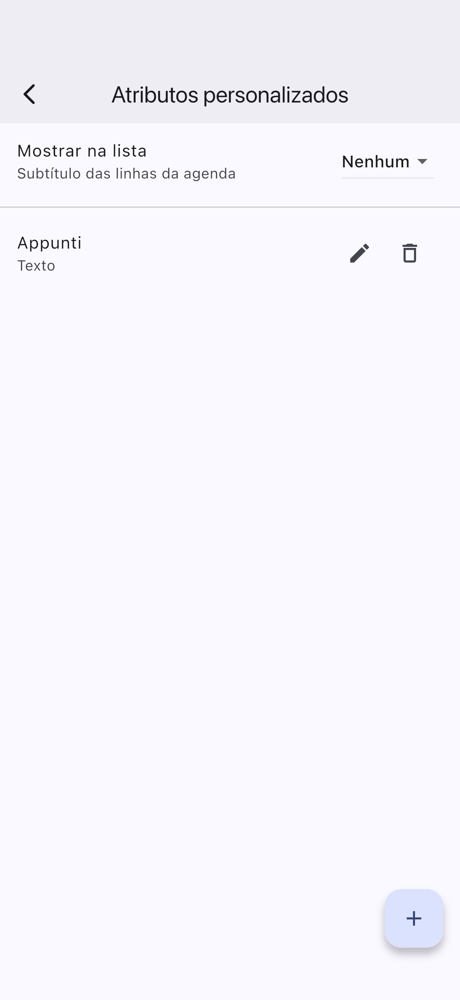
Quatro tipos: Texto (até 200 caracteres), Texto longo, Avaliação 1–5 (estrelas) e Data.
Os nomes devem ser distintos, e a comparação ignora acentos e maiúsculas: «Cidade» e «cidade» seriam o mesmo atributo, não dois.
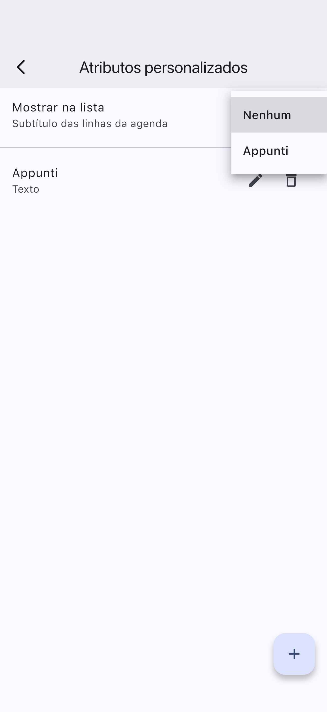
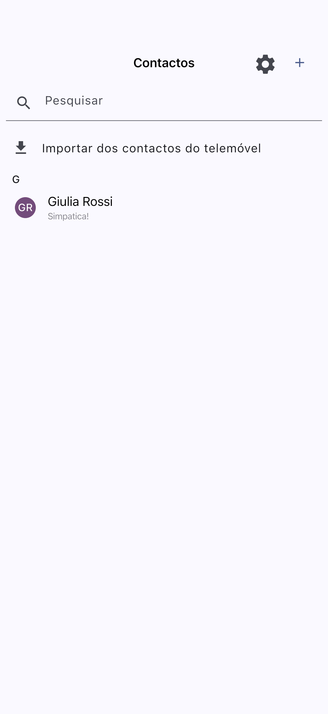
Um atributo — apenas um — pode tornar-se o subtítulo das linhas da agenda. Serve para tornar a lista legível quando os nomes não são suficientes para distinguir as pessoas.
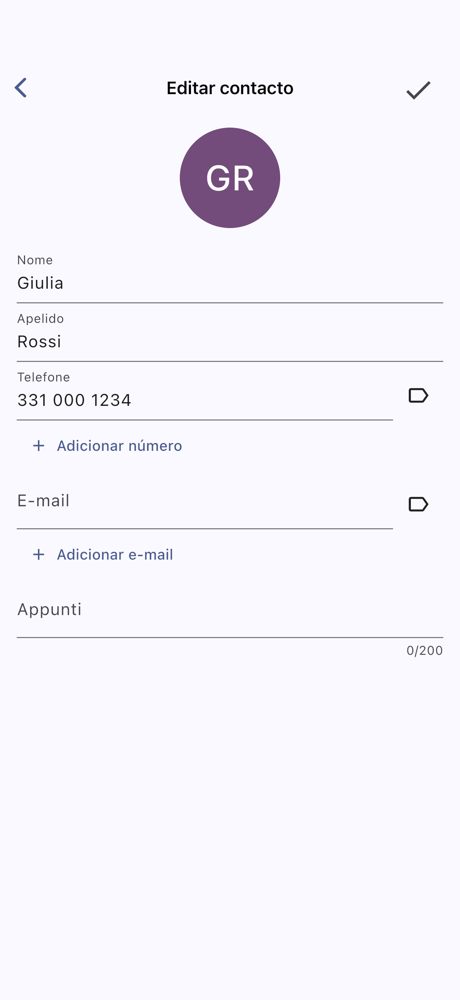
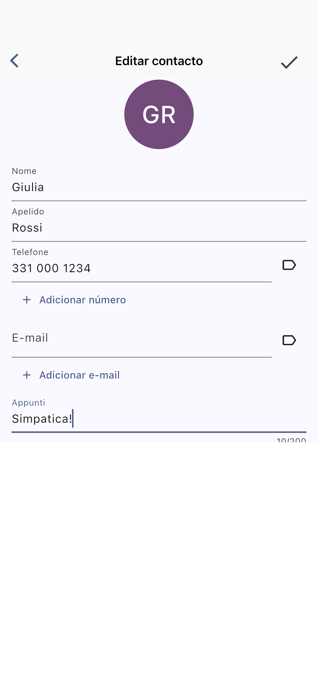
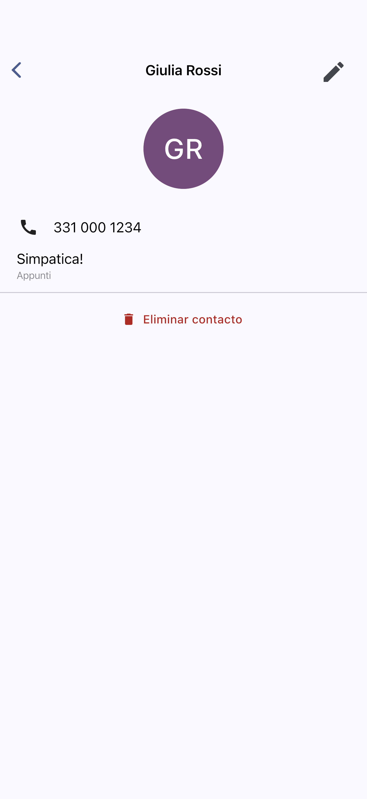
Os atributos definidos aparecem no final do editor de cada contacto dessa agenda, com o controlo adequado ao tipo. Os valores preenchidos são visíveis na ficha.
Eliminar um atributo elimina também os valores que os contactos tinham para esse campo, e a confirmação avisa.
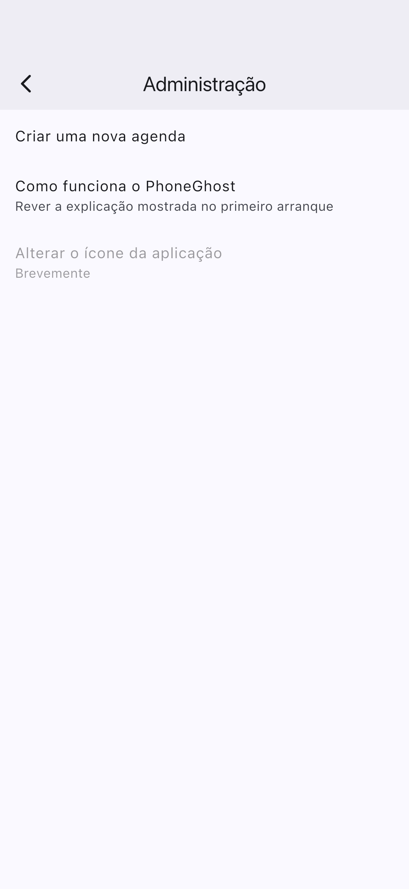
Abre-se digitando o código administrativo no campo de pesquisa da agenda e premindo enter. Não há nenhuma outra via: nenhum botão, nenhuma entrada de menu, nenhum gesto secreto.
Três entradas: criar uma nova agenda privada, reler a explicação do primeiro arranque, e alterar o ícone da app — esta última anunciada mas ainda não implementada.
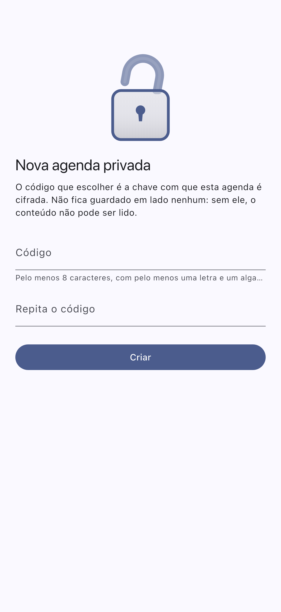
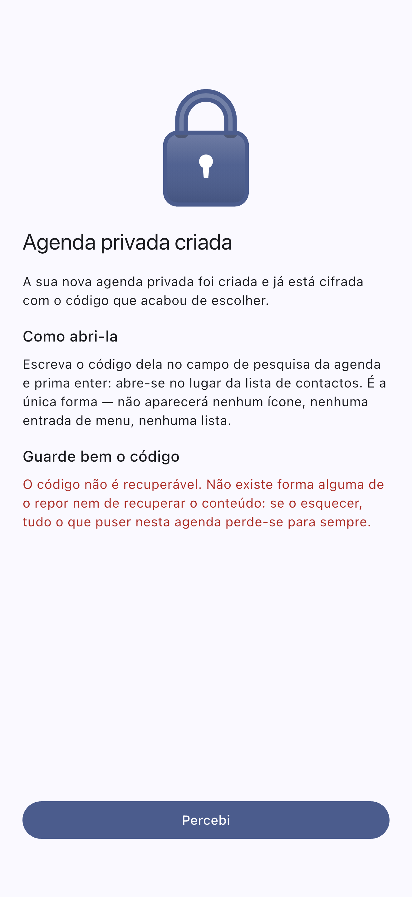
O código que escolhe é a chave com que a agenda é cifrada. Não é guardado em lado nenhum: a chave é derivada dos dados armazenados, nunca o próprio código.
As regras são as mesmas que para o código administrativo (8+ caracteres, pelo menos uma letra e um algarismo). Se o código não for aceitável, a app apenas diz «Código inválido»: não diz porquê, e em particular nunca diz «este código já está em uso» — ao dizê-lo, revelaria que existe outra agenda.
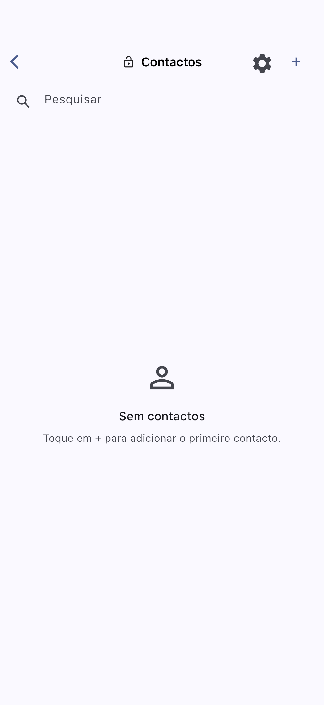
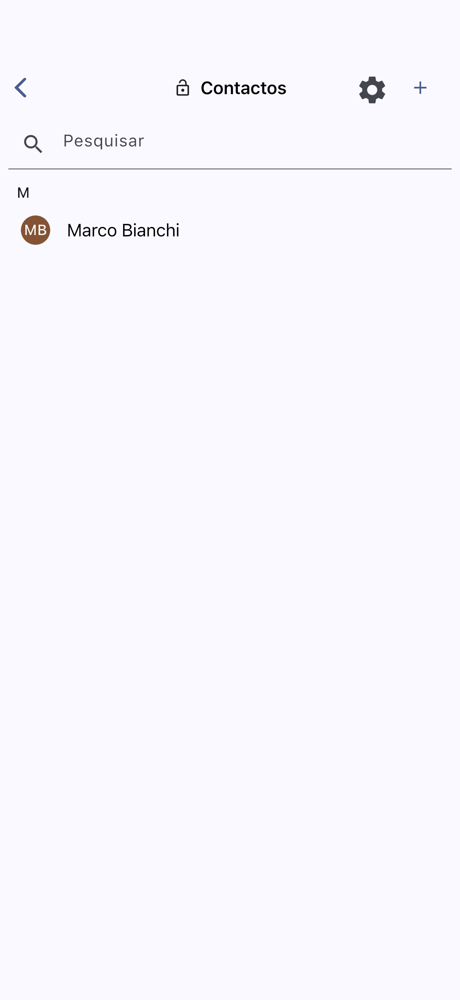
Digite o código no campo de pesquisa e prima enter: a agenda privada substitui a lista pública. Esta é a única forma.
O único sinal de que está dentro de uma agenda privada é o pequeno cadeado junto ao título — discreto de propósito: quem olha para o ecrã de longe vê uma agenda.
Tudo funciona como na pública: contactos, pesquisa, fotografias, atributos. Premir Retroceder fecha a agenda e a sua base de dados.
Duas limitações declaradas:
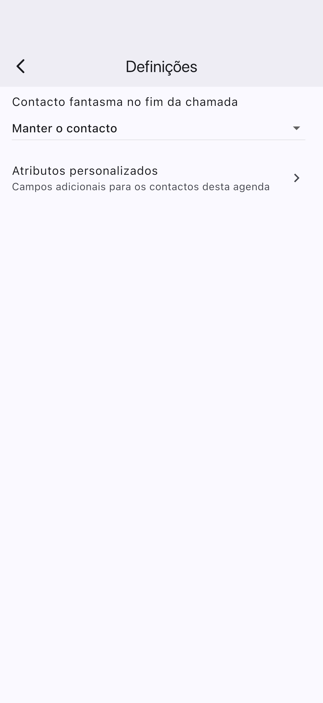
A agenda pública tem importação e não tem política de contacto fantasma; uma agenda privada é exactamente o contrário — sem importação, mas com a opção de gestão do contacto fantasma (§7).
Quando liga para um contacto de uma agenda privada, o nome desse contacto não existe para o sistema — apareceria como um número a descoberto em Recentes. O PhoneGhost cria então, um instante antes de marcar, um contacto fantasma na agenda do sistema com o alias que escolheu, para que o registo de chamadas mostre um nome.
O alias define-se no editor do contacto, e o campo aparece apenas dentro de uma agenda privada: na agenda pública não faria sentido, porque os contactos aí não são privados.
A opção «Contacto fantasma após a chamada» (§6.4) decide o destino desse contacto:
| Opção | Efeito |
|---|---|
| Manter o contacto (predefinido) | O contacto fantasma permanece na agenda do sistema e o nome continua a aparecer em Recentes |
| Eliminar o contacto | O contacto fantasma é removido imediatamente após a chamada |
O comportamento depende do marcador: um telefone diferente pode comportar-se ao contrário. O predefinido é escolhido para funcionar no pior caso.
Para ocultar os contactos fantasma na app Contactos do telefone, desselecione a conta it.phoneghost.local em «Contactos a mostrar».
A app fala seis idiomas — italiano, inglês, espanhol, francês, alemão, português — e segue o idioma do telefone; quem não fala nenhum dos seis vê o inglês.
Tema claro e escuro, seguindo o sistema. No iPhone, alguns ecrãs usam controlos nativos do iOS.
As agendas privadas ocultam quais espaços estão ocupados, e a contagem é misturada com espaços isco. Mas:
Não é um defeito a corrigir: é o limite declarado do que o projeto promete.